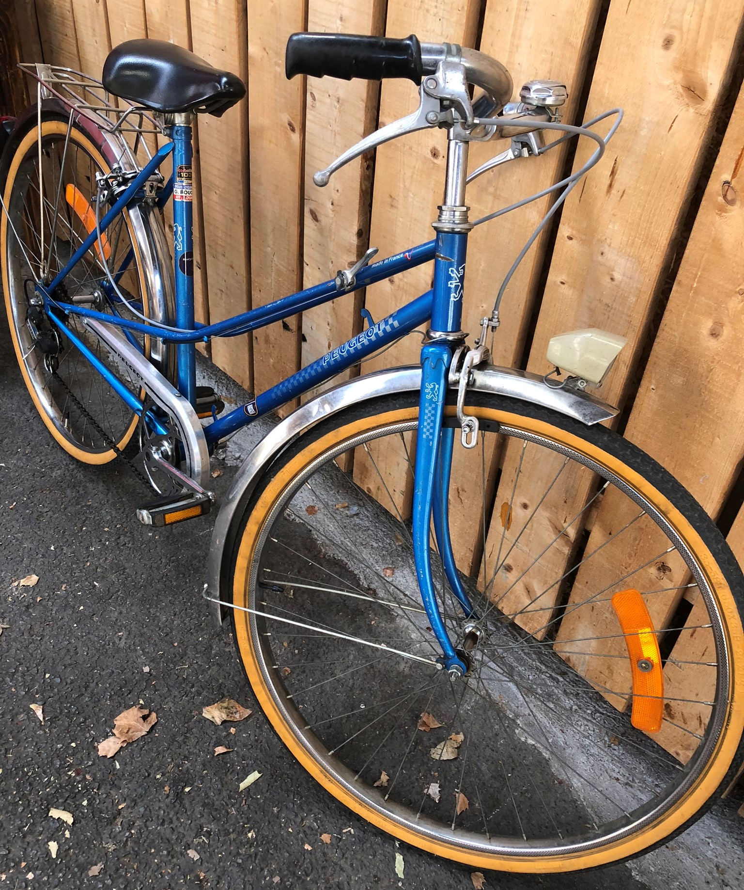
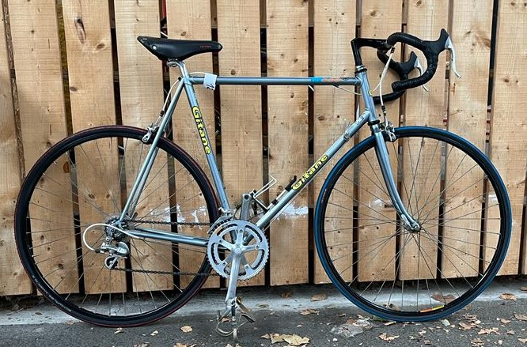
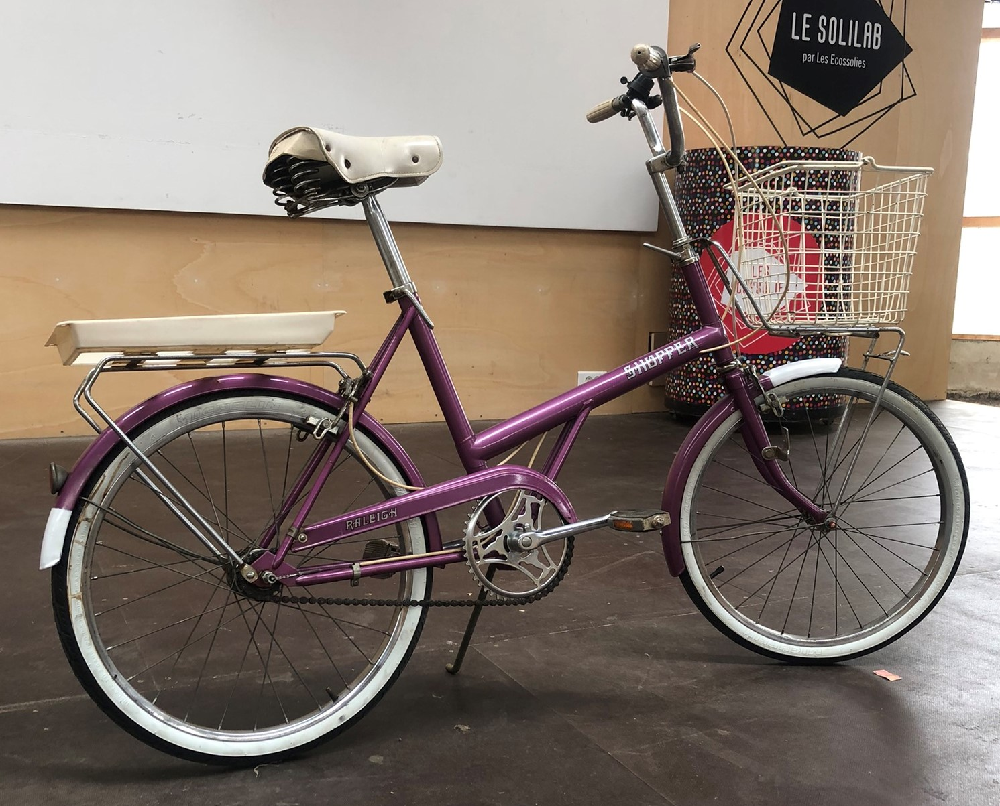
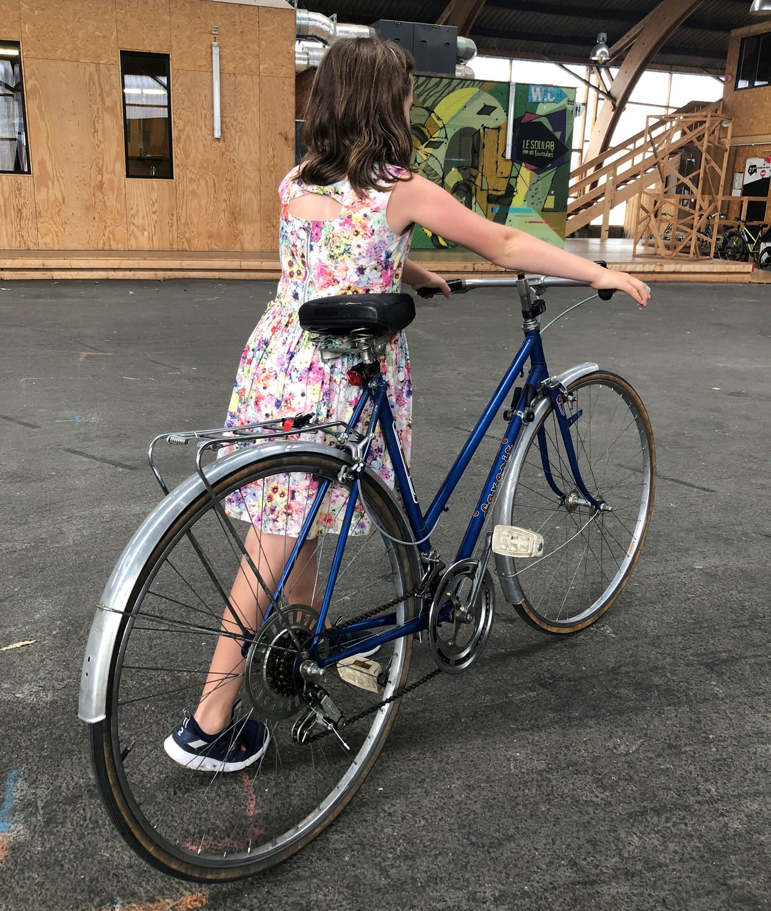
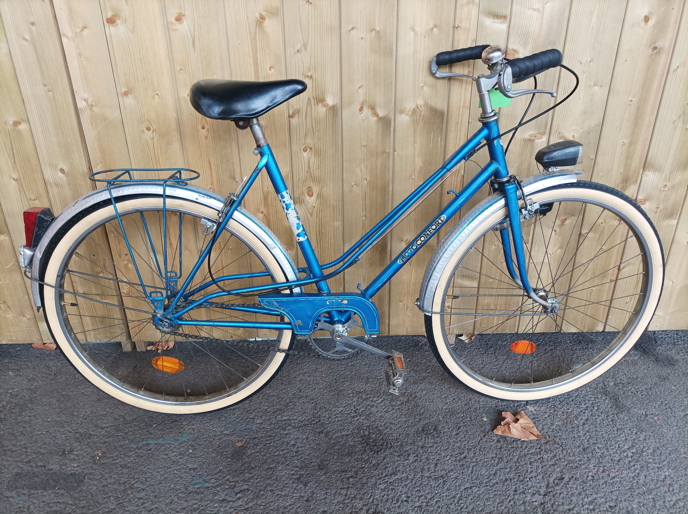

Collectif La Dynamo
- Nantes -
L'atelier d'Alice et NaoCycles s'associent pour vous proposer des vélos d'occasion à la vente !
Vélos en vente
Tous nos vélos sont révisés et remis en état avant la vente.
Le marquage antivol et les équipements de sécurité, obligatoires, sont inclus dans le prix.
Contactez-nous pour essayer votre futur vélo !
Vélo de ville Peugeot

- Année 1983 - cadre acier
- Taille S+, roues de 26"
- 3 vitesses, éclairage par dynamo
- Porte-bagage, garde-boues
- Pièces neuves : chaîne, câbles et gaines, patins de frein, pneus
- Prix de vente : 95 €
Vélo de route Gitane

- Taille 57 cm
- 2x7 vitesses, pédales avec cale-pieds
- Pièces neuves : chaîne, câbles, guidoline, patins, pneus et chambres à air
- Prix de vente : 140 €
Vélo Shopper Raleigh

- Convient pour une personne entre 1,50 et 1,65m
- 3 vitesses, moyeu à vitesses intégrées
- Prix de vente : 125 €
Vélo de ville Favorit

- Année 1987 - Made in Czechoslovakia
- Taille 54cm
- 5 vitesses, éclairages USB
- Pièces neuves : câbles et gaines, patins
- Prix de vente : 105 €
Vélo de ville Motoconfort

- Nous contacter pour plus d'informations